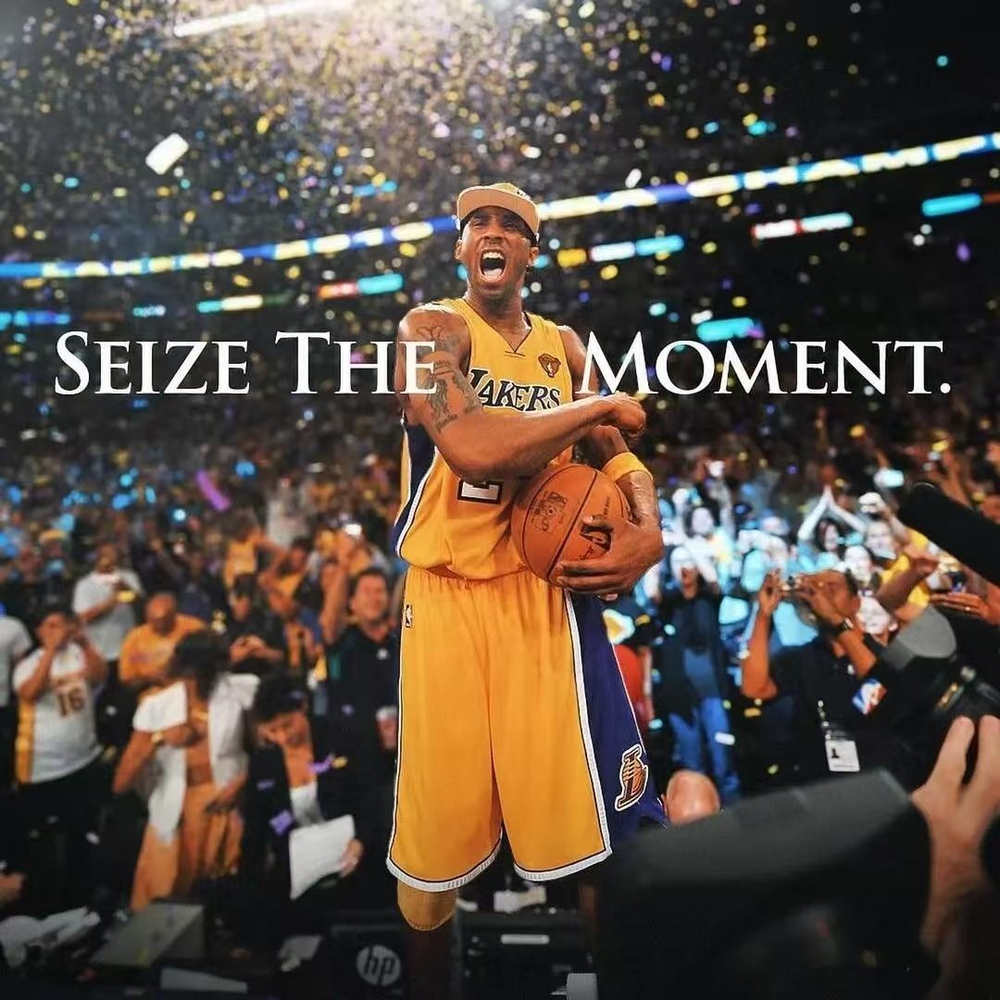
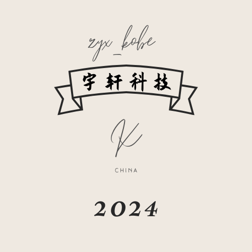

关于我

大家好，我叫Kobe_zyx，是一名热爱前端开发与设计的程序员。西安辅轮中学在读。
我热爱生活，也热衷于不断学习新技术，追求代码与设计的完美结合。“折腾”之余，我喜欢篮球、学习和阅读，这些爱好为我的创作提供了源源不断的灵感。
欢迎来到我的个人网站，希望能与大家分享我的技术心得和生活感悟！
作品展示

kitten计算机系统模拟项目
基于codemao研发的个人系统UI界面，虽未开源，但极具参考价值
个人博客
现代化界面设计，基于Github作者HUX BLOG制作，仍在改进...
多模态Gemini 2.0 Flash
个人制作多模态AI应用，响应大环境需要，复制链接以体验。（需准备Google Gemini API key 如没有，可查阅我的博客文章自行申请）
作品名称4
艺术与技术的结合。